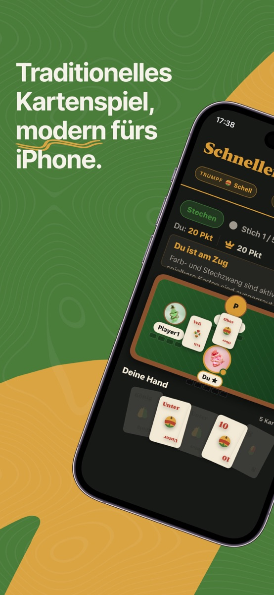
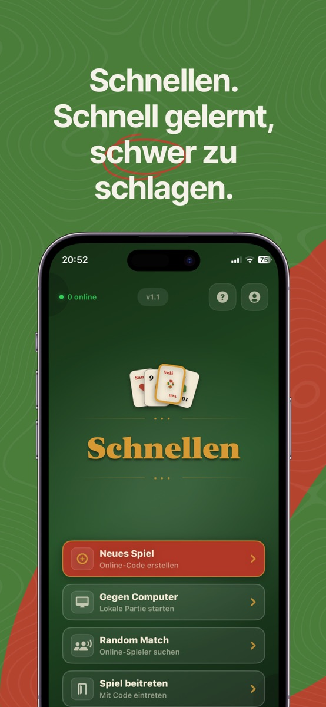
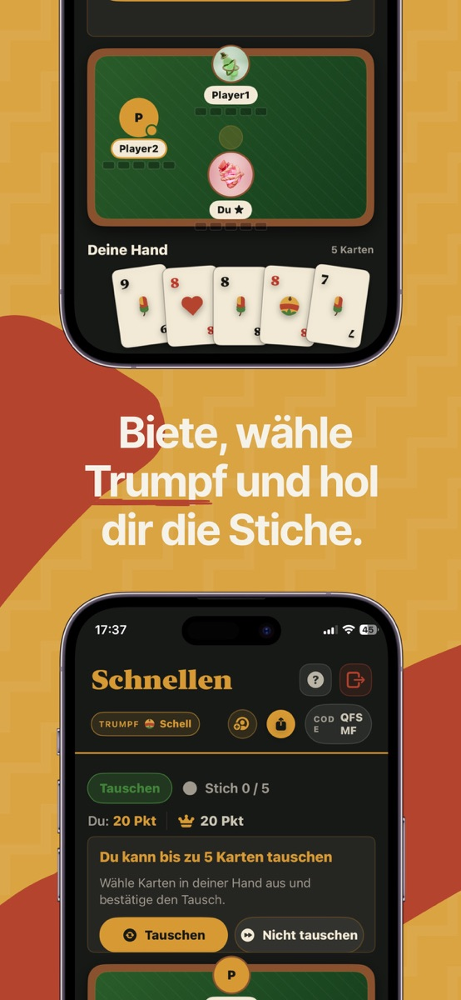
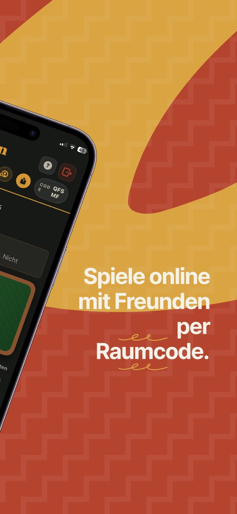
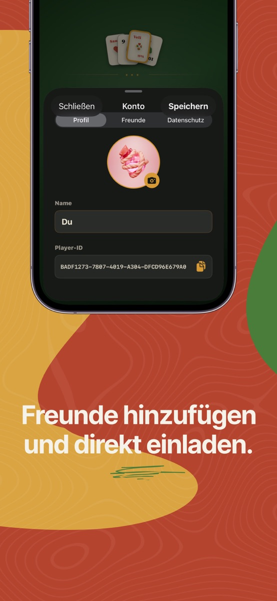
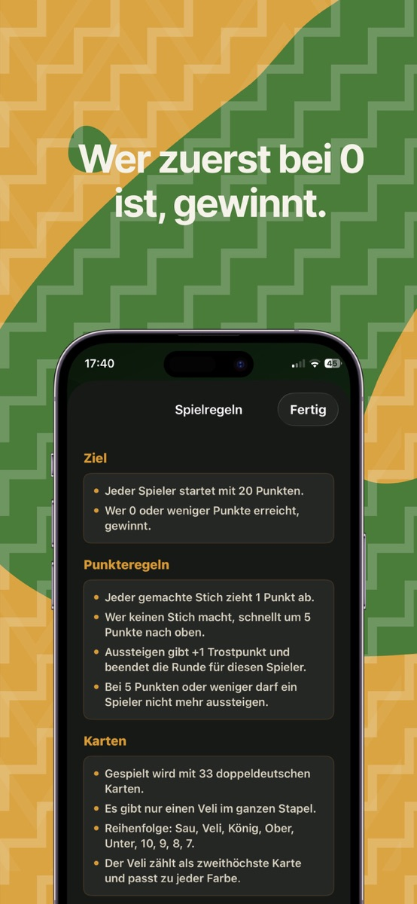

Deine Runde. Deine Freunde.
Erstelle einen privaten Spielraum und teile den Raumcode. Oder füge Freunde per Player-ID hinzu und lade sie direkt ein.
DAS KARTENSPIEL FÜR IPHONE & IPAD
Ein gutes Blatt. Eine mutige Ansage. Und noch eine Runde. Schnellen bringt das traditionelle Kartenspiel auf dein iPhone und iPad.
Kostenlos laden · Ab iOS 17.6 · Auch fürs iPad
Am liebsten gemeinsam.
Mit Freunden, neuen Gegnern oder dem Computer.

DIE APP
Schnellen gehört zur Kartenspieltradition in Tirol und im Alpenraum. Jetzt kommt die nächste Partie dorthin, wo du gerade bist.
Erstelle einen privaten Spielraum und teile den Raumcode. Oder füge Freunde per Player-ID hinzu und lade sie direkt ein.
Mit Random Match trittst du online gegen andere Spieler an. Jede neue Runde bringt neue Entscheidungen.
Spiele gegen Computergegner oder ergänze deinen privaten Spielraum mit ihnen.
Übersichtliche Karten, automatische Punktewertung und eigene Profile mit Namen und Bild. So bleibt der Kopf beim nächsten Stich.
EIN BLICK INS SPIEL
Originalansichten aus der App. Tippe auf ein Bild, um es groß zu öffnen.





SCHNELLEN SPIELREGELN
33 doppeldeutsche Karten, fünf Karten auf der Hand und ein Ziel: von 20 auf 0. Hier beginnt deine erste Runde.
In der App ausprobieren ↗Alle geben ein Gebot ab. Wer am höchsten bietet, bestimmt die Trumpffarbe – und damit die Richtung der Runde.
Entscheide, ob du mitspielst oder aussteigst. Beim Tauschen kannst du deine Hand verbessern. Bei 5 Punkten oder weniger ist Aussteigen nicht mehr möglich.
Spiele deine Karten aus und beachte Farb- und Stechzwang. Jeder gewonnene Stich zieht normalerweise einen Punkt ab.
Du startest mit 20 Punkten. Wer zuerst 0 oder weniger erreicht, gewinnt. Ohne Stich kommen 5 Punkte dazu; Aussteigen kostet 1 Punkt.
Kurz erklärt nach der App-Variante. Sonderregeln der Trumpffarben können die Wertung verändern. Alle Details findest du in der Hilfe der App.
GUT ZU WISSEN
Schnellen, auch Schnelln oder Schnölln genannt, ist ein traditionelles Stichspiel aus dem Alpenraum. Du versuchst, deinen Punktestand durch gewonnene Stiche auf null zu bringen.
Schnellen wird im österreichischen App Store derzeit kostenlos angeboten. Verbindlich sind die jeweils aktuellen Angaben im App Store.
Die App ist für iPhone und iPad verfügbar und benötigt iOS beziehungsweise iPadOS 17.6 oder neuer. Die aktuelle Gerätekompatibilität findest du im App Store.
Erstelle einen Online-Spielraum und teile den Raumcode. Freunde kannst du auch per Player-ID hinzufügen und direkt zu einer Runde einladen.
Ja. Du kannst gegen Computergegner spielen und sie auch zu privaten Spielräumen hinzufügen. Für Online-Partien brauchst du eine Internetverbindung.
Die vollständigen Regeln und Sonderregeln für Trumpffarben findest du in der App über die Hilfe. Die Erklärung auf dieser Seite ist ein kurzer Einstieg; regionale Schnellen-Varianten können davon abweichen.
Öffne in der App den Konto-Bereich und anschließend Datenschutz. Dort kannst du deine Profildaten löschen. Weitere Informationen stehen in der verlinkten Datenschutzerklärung der App.
SUPPORT
Eine Frage, eine Idee oder etwas funktioniert nicht? Schreib eine E-Mail. Bei einem Fehler helfen dein Gerät, die App-Version und eine kurze Beschreibung.
jillappcontact@gmail.com ↗NOCH EINE RUNDE?
Schnellen für iPhone und iPad.